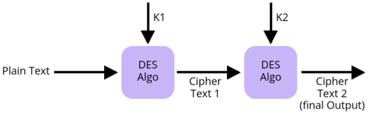
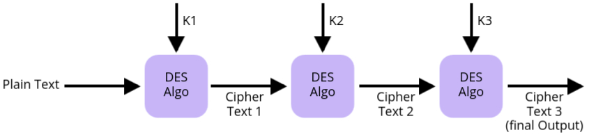

Modern Block Ciphers
- In cryptography, block ciphers play a crucial role in encrypting data securely. A block cipher works by dividing the data into fixed-size blocks (usually 64 or 128 bits) and encrypting each block individually. This is different from stream ciphers, which process data bit by bit. Block ciphers ensure security by using two essential properties: confusion (making the relationship between the ciphertext and key as complex as possible) and diffusion (spreading out the influence of one plaintext symbol over many ciphertext symbols).
- One of the earliest block ciphers was the Data Encryption Standard (DES), developed in the 1970s. DES set the foundation for block cipher design, but over time, it became vulnerable to attacks due to the increase in computational power. To address these limitations, modern block ciphers like Advanced Encryption Standard (AES) were introduced, providing stronger security and better performance.
- In this unit, we will explore both older and modern block ciphers. We'll start by looking at the fundamental components and design principles of block ciphers, then move on to specific examples like DES and AES. Understanding these concepts is key to seeing how encryption has evolved to meet modern security demands. As we explore each cipher, we will see how cryptography has improved to handle today's threats while building on the principles of early systems like DES.
Modern Block Ciphers Components
- In modern cryptography, block ciphers are widely used to secure data. These ciphers break the plaintext (the data we want to protect) into fixed-size chunks, or "blocks," and then encrypt each block using a complex series of steps. Each of these steps involves mathematical operations and transformations that make it nearly impossible for unauthorized users to recover the original data without the correct key.
- To understand how block ciphers work, we need to look at their key components. These components are like building blocks of the encryption process, each serving a unique purpose in turning readable data into ciphertext (encrypted data).
S-Box
- An S-Box, or Substitution Box, is a critical component in modern block ciphers. Its job is to take a small set of input bits and transform them into a different set of output bits. This process is known as substitution, where one set of values is substituted for another to confuse the relationship between the plaintext and the ciphertext. This confusion is an essential part of encryption because it makes it harder for attackers to detect patterns and break the cipher.
- In simpler terms, the S-Box replaces bits of the input with new bits according to a predefined table. This substitution makes it extremely difficult for attackers to predict or reverse-engineer the encryption process without knowing the key.
- The S-Box is predefined by the designers of the encryption algorithm and is standardized to provide consistent, secure encryption. Its primary purpose is to make the cipher resistant to cryptographic attacks like differential and linear cryptanalysis. A well-designed S-Box ensures that even small changes in the input result in unpredictable changes in the output, enhancing security.
Simple Example:
Imagine we have an input of 2 bits. The S-Box for this system might be a simple table like this:

How it works:
- Suppose our input is 01. According to the table, the output will be 10.
- The substitution is straightforward: you just replace the input with the corresponding output based on the S-Box.
This simple substitution hides the original bits and makes it harder for someone to understand what the input was by looking at the output.
Role of the S-Box in Encryption:
- The goal of the S-Box is to introduce confusion in the encryption process. Confusion means that the relationship between the key and the ciphertext is obscured. An attacker should not be able to easily deduce what key was used just by analyzing the ciphertext.
- To make it effective, modern block ciphers typically use many S-Boxes, performing multiple rounds of substitution on the data, often combined with other transformations (like permutations). This makes it extremely difficult to reverse the encryption without knowing the key.
P-Box
- The P-Box, or Permutation Box, is a crucial component of modern block ciphers. Its role is to shuffle the positions of the input bits without changing their values. This process is known as permutation, and it is essential for adding diffusion to the encryption process. Diffusion ensures that each bit of the plaintext influences many bits of the ciphertext, making it harder for attackers to trace the encryption back to the original message.
- In simpler terms, the P-Box rearranges bits in the input data according to a predefined pattern. While the S-Box changes the actual values of the bits, the P-Box only changes their positions. This bit shuffling plays a critical role in making the encryption more resistant to attacks.
- The P-Box is predefined by the encryption algorithm's designers and is standardized to ensure security. The purpose of the P-Box is to spread the effect of individual bits throughout the entire data block, making it difficult for attackers to find patterns that could help them break the cipher.
Simple Example:
Let’s say we have an 8-bit input: 10111001. The P-Box will rearrange the positions of these bits based on a predefined pattern. Assume the predefined permutation pattern is:

How it works:
- Now, using this pattern, the input 10111001 will be permuted as follows:
- Bit in position 1 (1) moves to position 4.
- Bit in position 2 (0) stays in position 2.
- Bit in position 3 (1) moves to position 6.
- Bit in position 4 (1) moves to position 8.
- Bit in position 5 (1) moves to position 1.
- Bit in position 6 (0) moves to position 7.
- Bit in position 7 (0) moves to position 5.
- Bit in position 8 (1) moves to position 3.
- The output after applying the P-Box will be: 11100110.
This rearrangement spreads the influence of each bit across the entire block, adding an extra layer of security.
Role of the P-Box in Encryption:
- The main goal of the P-Box is to introduce diffusion into the encryption process. Diffusion means that changes in the plaintext should spread throughout the ciphertext. Even a small change in the plaintext should result in significant, unpredictable changes in the ciphertext.
- Similar to the S-Box, modern block ciphers often use multiple P-Boxes in various rounds of encryption, combined with other transformations. This makes the overall encryption process highly secure and resistant to cryptanalysis.
Exclusive OR (XOR)
- The Exclusive OR, or XOR, is a fundamental logical operation used extensively in cryptography, especially in modern block ciphers. The XOR operation compares two input bits and produces an output bit based on a simple rule: the output is 1 if the input bits are different, and 0 if they are the same.
- XOR is widely used because it is a reversible operation. In encryption, it allows bits to be flipped in a predictable way, but without the key (or original bits), it is difficult for an attacker to reverse the operation. This makes XOR useful for combining keys with plaintext to produce ciphertext.
- In modern block ciphers, XOR is often used in combination with S-Boxes and P-Boxes to create secure, complex encryption systems. Its ability to provide both diffusion and confusion, when used correctly, makes it a critical component in many encryption algorithms.
Simple Example:
Consider two 4-bit inputs: 1010 and 1100. The XOR operation compares each
bit
from both inputs:

How it works:
- First bit:
1 XOR 1 = 0(since both bits are the same) - Second bit:
0 XOR 1 = 1(since the bits are different) - Third bit:
1 XOR 0 = 1(since the bits are different) - Fourth bit:
0 XOR 0 = 0(since both bits are the same)
The result of the XOR operation is 0110.
Role of XOR in Encryption:
- XOR is crucial in cryptography because of its reversibility. If you apply XOR twice with the same key, you get back the original data. This property allows encryption and decryption to work: encrypt with XOR, and decrypt by applying XOR again with the same key.
- XOR is used to combine the plaintext with the key during encryption. For example, if you XOR the key with the plaintext, you get ciphertext. To decrypt, you XOR the ciphertext with the same key, which reveals the original plaintext.
- In modern block ciphers, XOR is used repeatedly in various stages of encryption to ensure that changes in the plaintext or key result in unpredictable changes in the ciphertext, thereby enhancing security.
Circular Shift
- A Circular Shift, also known as a rotation, is a technique used in modern block ciphers to rearrange bits in a specific way. Unlike a standard shift, where bits are moved to the left or right with zeros filling the gaps, a circular shift wraps the bits around, creating a continuous loop.
- This process enhances diffusion in the encryption process. Diffusion means that a change in one bit of the input will affect multiple bits in the output, which increases security. Circular shifts are often combined with other transformations like S-Boxes and P-Boxes to form complex encryption algorithms.
Example:
For instance, if we have a 4-bit input: 1011, performing a circular left shift by 1 results in: 0111. Here, the leftmost bit '1' moves to the rightmost position, illustrating how the bits wrap around.
Role of Circular Shift in Encryption:
- The main goal of using circular shifts in encryption is to achieve better diffusion. This obscures the relationship between the plaintext and ciphertext, making it harder for attackers to decipher the encrypted data.
- In modern block ciphers, circular shifts are applied in multiple rounds, ensuring extensive transformation of the data, which enhances overall security.
Product Cipher
- A Product Cipher is a type of encryption that combines multiple encryption methods to enhance security. By using more than one encryption technique, it increases the complexity of the encryption process, making it more resistant to cryptographic attacks.
- This approach typically involves applying a series of transformations, such as substitutions and permutations, in succession. The idea is to layer these operations to obscure the relationship between the plaintext and ciphertext.
Example:
Imagine we have a plaintext block and we want to encrypt it using two methods: an S-Box for substitution followed by a P-Box for permutation. The process would look like this:
- Step 1: Apply the S-Box to the plaintext to produce an intermediate output.
- Step 2: Use the P-Box on the intermediate output to create the final ciphertext.
This combination of methods ensures that even if one method is compromised, the overall security of the product cipher remains intact due to the additional layers of encryption.
Role of Product Ciphers in Encryption:
- The primary goal of product ciphers is to enhance security by using multiple layers of encryption. This significantly complicates any attempts to analyze or break the cipher, as attackers would need to decipher each layer individually.
- Modern encryption algorithms often use product ciphers because they combine the strengths of different techniques, providing a robust framework for secure communication.
Thoughts of Feistel Design
Having explored the concept of product ciphers, we now delve into the Feistel design, a critical framework that enhances the security of block ciphers. While product ciphers layer various encryption techniques, the Feistel structure uniquely organizes these processes to allow for a more efficient and secure encryption method. This design is foundational for many modern encryption algorithms, including DES. Understanding the principles behind the Feistel design is essential as it demonstrates how multiple rounds of processing can effectively obscure relationships between plaintext and ciphertext, thereby strengthening overall security.
Feistel Cipher
The Feistel cipher is a symmetric encryption method used in modern block ciphers. Named after Horst Feistel, this design breaks the encryption process into multiple rounds, enhancing security while maintaining efficiency. The structure allows for both encryption and decryption to use the same algorithm, making it versatile.
How the Feistel Cipher Works
The Feistel cipher operates on a block of plaintext, dividing it into two halves. The encryption process involves multiple rounds, where each round applies a series of transformations using a round key derived from the original encryption key. Here's a step-by-step explanation of how the Feistel cipher functions:
- Input: The plaintext is split into two halves: Left (L) and Right (R).
- Round Function: In each round, a function (often denoted as F) processes the right half and the round key (K1, K2, etc.) through an XOR operation.
- XOR Operation: The output of the round function is then XORed with the left half.
- Swapping: After each round, the halves are swapped. This means the output from the first half becomes the input for the second round, and vice versa.
- Repetition: This process is repeated for a specified number of rounds (usually 16 or more).
- Final Output: After completing all rounds, the combined halves produce the final ciphertext.

Key Points
- The Feistel structure allows for both encryption and decryption using the same function, enhancing its efficiency.
- By repeating the process for multiple rounds, the Feistel cipher effectively obscures the relationship between plaintext and ciphertext, increasing security.
- This design forms the basis for well-known encryption standards like DES (Data Encryption Standard).
Data Encryption Standard (DES)
- Symmetric key-block cipher which means its having same key for encryption + decryption
- published by (NIST) National institute of standards and technology
- DES is block cipher
- and as we already know about fiestel cipher so basicallly DES uses 16 rounds and each round is a fiestel round
- It became widely used for secure data transmission. DES encrypts data in fixed-size blocks of 64 bits and uses a 56-bit key to control the encryption process. Symmetric key cryptography means the same key is used for both encryption and decryption.
- However, due to advances in computing power, DES has become less secure over time because its key length (56 bits) is vulnerable to brute-force attacks. For this reason, DES has largely been replaced by stronger encryption algorithms like AES, but understanding DES is important for learning about the history of cryptography and encryption techniques.
- Steps of DES are:
- Initial Permutation (IP): The 64-bit plaintext is rearranged based on a predefined table.
- 16 Feistel Rounds: The data goes through 16 rounds of Feistel structure processing, where each round uses a different 48-bit subkey.
- Final Permutation (FP): After the 16 rounds, the bits are rearranged again to form the 64-bit ciphertext.
General Structure of DES:

Explanation of the General Structure of DES:
- In DES, encryption starts with a 64-bit plaintext. This plaintext first goes through an Initial Permutation (IP), where the bits are rearranged based on a fixed table. After this, the data undergoes 16 rounds of encryption, following a Feistel cipher structure.
- In each round, the plaintext is split into two halves: the left (L) and right (R). The right half is transformed, and the left half is XORed with the transformed right half. This process ensures confusion and diffusion, key cryptographic principles that scramble the data to secure it.
- At the end of 16 rounds, the two halves are recombined and passed through a Final Permutation (FP), which rearranges the bits again. This gives the final 64-bit ciphertext.
- For the 16 rounds, we need different keys. DES uses a 56-bit cipher key, but it generates a 48-bit subkey for each round through the round key generation process. Even though we start with a 56-bit key, each round uses a different 48-bit subkey.
- Remember, DES follows the Feistel cipher model, so the encryption process can be easily reversed during decryption.
Inital and final permutation
- The Data Encryption Standard (DES) uses an initial permutation (IP) and a final permutation (FP) as part of its encryption and decryption process. These permutations do not contribute to the security of the algorithm but serve to reorder the bits in a structured way before and after the core encryption process (Feistel rounds).
Inital Permutation (IP)
- The initial permutation occurs once at the start of DES, before the 16 Feistel rounds begin.
- It rearranges the 64 bits of plaintext into a new order based on a predefined table.
Initial Permutation Table (IP Table)

- In this example, the 1st bit of the plaintext is moved to the 58th position, the 2nd bit to the 50th position, and so on, following this table. The table continues for all 64 bits. This reordering of bits makes the structure of the message harder to analyze but does not encrypt the data itself.
Purpose of Initial and Final Permutations
- Increase complexity: While the initial and final permutations do not directly enhance security, they increase the complexity of analyzing the DES process. The initial permutation scrambles the input data, and the final permutation undoes the scrambling after encryption.
- Prepare data for Feistel rounds: The initial permutation reorders bits to create a format that feeds into the Feistel structure, which performs the core encryption.
Final Permutation (FP)
- The final permutation occurs after the 16 Feistel rounds. It is the exact inverse of the initial permutation, restoring the bit order so that the output appears scrambled in the same way the plaintext was originally.
Final Permutation Table (FP Table)

- In this table, the 58th bit from the result of the Feistel rounds becomes the 1st bit of the final ciphertext. This reverse operation ensures that the bit positions are restored after being scrambled by the initial permutation.
Rounds:
- There are 16 rounds and each round is a Fiestel Cipher.
- In the Feistel cipher structure used by DES, the 64-bit plaintext is divided into two equal
halves:
- The left half, denoted as L1, is 32 bits.
- The right half, denoted as R1, is also 32 bits.
Only the right half (R1) and the first round key (K1) are passed through the DES function. The output of this DES function is then XORed with the left half (L1). After this XOR operation, the left and right halves are swapped. This process of dividing, processing, XORing, and swapping continues for a total of 16 rounds. Each round uses a unique 48-bit round key.
The DES function plays a crucial role in each round. Therefore, it is important to understand the structure and operations within the DES function to comprehend how the encryption works in DES.
DES Function
- The DES function applies a 48-bit key to the rightmost 32 bits of the input data block to produce a 32-bit output.
- The following components are involved in this function:
- Expansion P-Box: Expands the 32-bit input to 48 bits by duplicating certain bits to create 8 groups of 6 bits.
- Whitener (XOR Operation): The expanded 48-bit data is XORed with a 48-bit subkey derived from the main key.
- Group of S-Boxes: The 48-bit output from the XOR operation is passed through 8 substitution boxes (S-boxes). Each S-box reduces 6 bits of input into 4 bits of output, resulting in a 32-bit output.
- Straight P-Box: This 32-bit output is permuted through a straight P-Box, which reorders the bits in a predefined manner, producing the final 32-bit output.
Function Diagram:

The explanation of the DES function is as follows:
The 32-bit right half of the input block is first sent to the Expansion P-Box,
which
expands it to 48 bits by replicating certain bits. This 48-bit value is then XORed with a 48-bit
subkey
generated from the main DES key. The result of this XOR operation is passed through 8
S-Boxes, where each group of 6 bits is substituted with a 4-bit output, leading to
a
final output of 32 bits.
This 32-bit output is then permuted using the Straight P-Box, which rearranges the
bits
into a fixed order, producing the final 32-bit result, which is combined back into the overall DES
structure.
Cryptanalysis
Cryptanalysis is the study of methods used to break cryptographic systems and decrypt
messages without knowing the secret key. The main goal of cryptanalysis is to discover weaknesses or
vulnerabilities in the algorithms that allow an attacker to bypass the encryption and access the
original data. Cryptanalysis is considered a critical part of cryptography because it helps improve the
security of encryption methods by identifying potential flaws.
There are various techniques used in cryptanalysis, but two common types that focus on analyzing block
ciphers are Differential Cryptanalysis and Linear Cryptanalysis. These
methods are particularly important in testing the strength of algorithms like the Data Encryption
Standard (DES).
Differential Cryptanalysis
Differential Cryptanalysis is one of the most well-known techniques used to break block ciphers. It was developed in the late 1980s and involves analyzing how differences in the input data affect the differences in the output data. The goal is to study the propagation of differences through the cipher and exploit patterns that can reveal information about the key.
- Basic Concept: In differential cryptanalysis, an attacker examines pairs of plaintexts that have specific differences (such as flipping certain bits) and compares how these differences propagate through multiple rounds of encryption.
- Objective: The goal is to find correlations between input differences and output differences that occur with higher probabilities than expected by random chance. By identifying these patterns, an attacker can make educated guesses about parts of the secret key.
- Application to DES: Differential cryptanalysis was one of the first attacks that showed DES has some vulnerabilities, although DES is still considered secure against this attack when a full 16-round encryption process is used.
Steps in Differential Cryptanalysis:
- Choose a Pair of Plaintexts: The attacker selects two plaintexts that differ by a specific amount, usually by flipping certain bits.
- Encrypt the Plaintexts: Both plaintexts are encrypted using the block cipher (without knowing the key).
- Analyze the Differences: The attacker analyzes the difference between the ciphertexts and looks for patterns that are common or occur with higher probability.
- Guess Part of the Key: Based on the observed patterns, the attacker can make guesses about part of the secret key and narrow down the possibilities.
- Iterate the Process: This process is repeated with different pairs of plaintexts to gather more information about the key until the key is fully recovered.
Differential cryptanalysis is a powerful attack that can break ciphers, but modern ciphers are designed with this attack in mind and have defenses to prevent it from being effective.
Linear Cryptanalysis
Linear Cryptanalysis is another well-known method for breaking block ciphers. It was developed shortly after differential cryptanalysis and is based on finding linear approximations that describe the relationship between the plaintext, ciphertext, and key. The goal of linear cryptanalysis is to exploit statistical biases in these relationships to recover the key.
- Basic Concept: In linear cryptanalysis, the attacker attempts to create linear equations that approximate the encryption process. These equations relate specific bits of the plaintext and ciphertext to bits of the key. By analyzing many such equations, the attacker can identify patterns that help them deduce the key.
- Objective: The main objective is to find linear approximations that hold true with a probability higher than random chance (greater than 50%). The more often these approximations hold, the more information the attacker can gather about the key.
- Application to DES: Linear cryptanalysis has been successfully used against DES, but like differential cryptanalysis, it is not effective against the full 16 rounds of DES encryption.
Steps in Linear Cryptanalysis:
- Collect Plaintext and Ciphertext Pairs: The attacker collects a large number of known plaintext-ciphertext pairs that have been encrypted using the same secret key.
- Analyze the Data: The attacker looks for linear patterns that relate specific bits of the plaintext and ciphertext to bits of the key.
- Create Linear Approximation Equations: These linear equations approximate the encryption process. Each equation gives a clue about a small part of the key.
- Count Occurrences: The attacker calculates how often these linear approximations hold true for the collected data. If the approximations hold true more than 50% of the time, they are considered useful.
- Guess the Key: Based on the useful approximations, the attacker makes educated guesses about the key bits and iteratively refines the guesses.
Linear cryptanalysis is more complex than differential cryptanalysis and often requires a large number of known plaintext-ciphertext pairs to succeed. However, it remains an important tool in evaluating the security of block ciphers.
Comparison of Differential and Linear Cryptanalysis
Both differential and linear cryptanalysis are powerful tools for breaking block ciphers, but they use different approaches:
- Differential Cryptanalysis: Focuses on analyzing how differences in input affect differences in output and looks for patterns in these differences.
- Linear Cryptanalysis: Focuses on creating linear approximations between the input and output and looks for statistical biases in these approximations.
Modern cryptographic algorithms are designed with defenses against these attacks, but understanding them is essential for evaluating the security of any cipher.
Block Cipher Design Principles
A block cipher is a method of encrypting text where a cryptographic key and algorithm
are applied to a block of data (often 64 or 128 bits) as a single unit, rather than one bit at a time
like in stream ciphers. The design of block ciphers is based on several principles that ensure the
cipher is secure and resistant to various forms of cryptanalysis.
There are three important design principles when creating a block cipher: the number of rounds, the
design of the function f, and the key schedule algorithm. These factors work together
to ensure that the encryption is strong, difficult to break, and resistant to known cryptanalysis
methods like differential and linear cryptanalysis.
1. Number of Rounds
The number of rounds in a block cipher refers to how many times the encryption process is applied to the data. Each round consists of several transformations that increase the complexity of the ciphertext, making it harder for an attacker to reverse-engineer or guess the original plaintext.
- Why Rounds Matter: The more rounds a cipher has, the more difficult it becomes for an attacker to break it. Each round scrambles the data further, adding layers of complexity. In practice, ciphers like DES use 16 rounds, while more modern ciphers like AES can use 10, 12, or 14 rounds depending on the key size.
- Security vs. Efficiency: While more rounds increase security, they also make encryption and decryption slower. The goal is to find a balance between security and performance.
- Role in Cryptanalysis Resistance: Block ciphers are designed with enough rounds to resist cryptanalysis methods like differential and linear cryptanalysis. Each round adds more diffusion and confusion, which are key to making the encryption secure.
In general, the number of rounds should be large enough to ensure that attacks become computationally infeasible. Fewer rounds may leave the cipher vulnerable to certain attacks, while too many rounds can lead to unnecessary inefficiency.
2. Design of Function f
The function f is a critical component of many block ciphers, especially in Feistel-based ciphers like DES. It is applied to part of the data and combined with the other half using operations like XOR. The security of the cipher heavily depends on how well the function f is designed.
- Confusion and Diffusion: The function f should introduce confusion and diffusion in the data. Confusion refers to making the relationship between the key and ciphertext as complex as possible, while diffusion ensures that changes in the input are spread widely across the output.
- Non-Linearity: The function f must be non-linear, meaning that it should be difficult to express as a simple mathematical formula. Non-linearity helps prevent attackers from using algebraic methods to break the cipher.
- S-Boxes: In many block ciphers, function f includes substitution boxes (S-boxes), which map input bits to output bits in a complex, non-linear way. The design of S-boxes is crucial because weak S-boxes can lead to vulnerabilities.
- Permutation (P-Boxes): Some ciphers also include P-boxes (permutation boxes) within function f. P-boxes rearrange the bits in the data, spreading out the influence of individual bits across the block to provide better diffusion.
The design of function f must be carefully tested to ensure it resists all known attacks. It must also be efficient so that encryption and decryption can be performed quickly without sacrificing security.
3. Key Schedule Algorithm
The key schedule algorithm is responsible for generating the subkeys used in each round of encryption. Instead of using the same key for every round, most block ciphers break the main key into several subkeys, which are then applied during the encryption process.
- Generating Subkeys: The key schedule algorithm takes the original encryption key and derives several subkeys from it. Each round uses a different subkey, which adds complexity to the encryption process.
- Security Considerations: The key schedule should ensure that the subkeys are sufficiently different from one another. If subkeys are too similar, it could weaken the encryption and make it more susceptible to attacks.
- Role in Resisting Attacks: A strong key schedule algorithm helps protect against attacks like related-key attacks, where an attacker tries to exploit the relationship between different subkeys. It also prevents weaknesses that could arise if the same key is reused in every round.
- Efficient Key Expansion: The key schedule must be efficient enough to generate subkeys quickly without compromising security. In some algorithms like AES, the key schedule includes both substitution and permutation steps to enhance security.
A well-designed key schedule algorithm ensures that the block cipher remains secure even if an attacker knows part of the plaintext or ciphertext. It adds an extra layer of protection by diversifying how the key is used in each round.
Block Cipher Modes of Operation
A block cipher works by encrypting data in fixed-size blocks (like 64 or 128 bits). To encrypt larger messages, block ciphers need specific methods to handle data beyond a single block. These methods are called modes of operation. Each mode describes how blocks of plaintext are encrypted or decrypted, and each has its own strengths and weaknesses depending on the use case.
The most commonly used block cipher modes of operation are:
- Electronic Codebook (ECB)
- Cipher Block Chaining (CBC)
- Cipher Feedback (CFB)
- Output Feedback (OFB)
- Counter Mode (CTR)
1. Electronic Codebook (ECB)
The Electronic Codebook (ECB) is the simplest mode of operation where each block of plaintext is encrypted separately with the same key.
- The plaintext is divided into blocks, and each block is encrypted individually using the block cipher. The same key is used for each block, and there is no link between blocks.
2. Cipher Block Chaining (CBC)
The Cipher Block Chaining (CBC) mode improves upon ECB by introducing an initial random input known as the Initialization Vector (IV) and linking the encryption of each block to the previous one.
- In CBC, the plaintext block is XORed with the previous ciphertext block before encryption. This ensures that the encryption of each block depends on the previous one, adding security.
- The first block is XORed with an IV to prevent identical plaintext blocks from producing identical ciphertext blocks.
3. Cipher Feedback (CFB)
The Cipher Feedback (CFB) mode is a mode of operation that turns a block cipher into a stream cipher. It allows encryption of smaller units of data, such as bits or bytes, rather than blocks.
- CFB works by encrypting the previous ciphertext block (or IV for the first block) and then XORing the encrypted block with the plaintext. The result is the next ciphertext block.
- Like CBC, CFB uses an IV for the first block to ensure security, and the subsequent ciphertext blocks depend on the previous ones.
4. Output Feedback (OFB)
The Output Feedback (OFB) mode is similar to CFB but with a key difference: instead of encrypting the previous ciphertext block, OFB continuously encrypts the IV (or its output) to create a stream of key bits.
- In OFB, the IV is encrypted to produce a keystream, which is then XORed with the plaintext to produce ciphertext. This process continues for each subsequent block by encrypting the previous keystream output.
- This mode effectively turns a block cipher into a synchronous stream cipher.
5. Counter Mode (CTR)
The Counter Mode (CTR) is a highly efficient mode of operation that also turns a block cipher into a stream cipher. It is especially useful for parallel processing and offers many advantages over other modes.
- CTR works by encrypting a counter value (a unique number for each block) and then XORing the result with the plaintext to produce the ciphertext. The counter is incremented for each block.
- The counter ensures that each block is encrypted with a different key stream, even if the plaintext blocks are identical.
Multiple DES
Multiple DES (Data Encryption Standard) refers to the use of DES encryption multiple times to increase security. While standard DES uses a single 56-bit key, Multiple DES applies the encryption process more than once, using different keys. This method was introduced to overcome the vulnerabilities of single DES.
The two most popular implementations of Multiple DES are:
- Double DES (2DES)
- Triple DES (3DES)
1. Double DES (2DES)
Double DES involves applying DES encryption twice using two different keys. The goal is to improve security by increasing the key length from 56 bits (in DES) to 112 bits.
- How It Works:
- In 2DES, the plaintext is first encrypted with the first key (K1), and the resulting ciphertext is then encrypted again with the second key (K2).
- Decryption involves reversing the process: first decrypting with K2 and then with K1.
- Double DES Process: 
- Advantages:
- Increases key length from 56 bits to 112 bits, improving resistance to brute force attacks.
- Disadvantages:
- Still vulnerable to certain cryptographic attacks, such as the meet-in-the-middle attack, which reduces the effective key length to around 57 bits.
- Does not provide a significant security improvement over single DES due to the meet-in-the-middle attack.
2. Triple DES (3DES)
Triple DES (also known as TDES or 3DES) was designed to further enhance security by applying DES three times with two or three different keys. This process creates a much stronger encryption method than Double DES.
- How It Works:
- 3DES encrypts the plaintext with the first key (K1), then decrypts it with the second key (K2), and finally encrypts it again with the third key (K3). This triple application of DES increases security significantly.
- When using two keys (K1 = K3), the process is still called 3DES, but with only two unique keys.
- Triple DES Process: 
- Advantages:
- Increases the key length to 168 bits, making it much more resistant to brute force attacks than DES or 2DES.
- Provides significantly stronger security due to the three stages of encryption and decryption.
- Disadvantages:
- 3DES is relatively slow compared to modern block ciphers like AES, as it applies DES three times.
- It is still vulnerable to certain attacks but far less so than 2DES.
Introduction to AES
Advanced Encryption Standard (AES) is a symmetric key encryption algorithm widely used to secure sensitive data. AES was introduced as a replacement for the Data Encryption Standard (DES), which became vulnerable to brute-force attacks due to its shorter key length. AES is known for its speed, security, and efficiency, making it the preferred standard for modern encryption.
Why AES Replaced DES
DES, with its 56-bit key length, was susceptible to brute-force attacks. As computational power increased, breaking DES became more feasible. To address these vulnerabilities, the National Institute of Standards and Technology (NIST) initiated a search for a stronger encryption algorithm. In 2001, NIST selected AES, which uses longer key lengths and is much harder to break than DES.
AES Key Features
- Key Length: AES supports key sizes of 128, 192, or 256 bits, offering stronger security than DES’s 56-bit key.
- Block Size: AES encrypts data in blocks of 128 bits, unlike DES, which uses 64-bit blocks.
- Speed and Efficiency: AES is much faster than DES, especially on modern hardware, as it is designed for both software and hardware efficiency.
- Security: AES provides excellent security against all known cryptographic attacks, making it highly reliable for securing sensitive data.
How AES Works
AES is a block cipher that operates on fixed-size blocks of data (128 bits) and applies several rounds of encryption to transform the plaintext into ciphertext. The number of rounds depends on the key length:
- 10 rounds for 128-bit keys
- 12 rounds for 192-bit keys
- 14 rounds for 256-bit keys
Main Steps of AES Encryption
- 1. Key Expansion: The original key is expanded into multiple round keys, one for each round of encryption.
- 2. Initial Round (AddRoundKey): The initial key is XORed with the plaintext block.
- 3. Rounds: Each round involves the following steps:
- SubBytes: A non-linear substitution step where each byte of the block is replaced using a substitution table (S-box).
- ShiftRows: The rows of the block are shifted cyclically to the left, increasing diffusion.
- MixColumns: Columns of the block are mixed together using linear algebra to enhance security (not used in the final round).
- AddRoundKey: The current block is XORed with the round key generated from the original key.
- 4. Final Round: The last round omits the MixColumns step and consists of SubBytes, ShiftRows, and AddRoundKey operations.
Security Strength of AES
AES is highly secure due to its use of longer key lengths and more complex encryption rounds compared to DES. Its strength lies in its resistance to various cryptographic attacks:
- Brute-Force Attacks: AES’s key lengths (128, 192, and 256 bits) make brute-force attacks impractical, even with modern computing power.
- Linear and Differential Cryptanalysis: AES is designed to resist both linear and differential cryptanalysis, which are common methods for breaking symmetric ciphers.
- Side-Channel Attacks: While AES itself is secure, implementations of AES must be protected against side-channel attacks, such as timing attacks and power analysis attacks.
AES has become the global standard for symmetric key encryption due to its high security, efficiency, and flexibility. It is widely used in applications such as secure communications, data storage, and payment systems. Unlike DES, which had limitations due to its shorter key length and vulnerabilities to attacks, AES offers stronger encryption with more complex rounds, making it highly resistant to modern cryptographic threats.